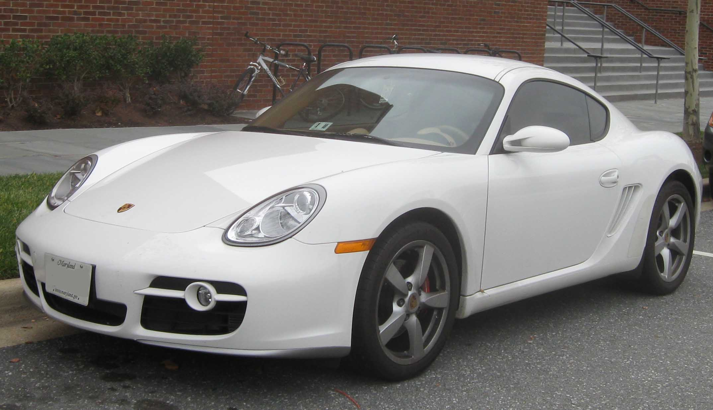

Características
- Motor: Flat-6 de 3.4 litros
- Potencia: 295 caballos de fuerza
- Aceleración (0-100 km/h): 5.1 segundos
- Velocidad máxima: 275 km/h
- Transmisión: Manual de 6 velocidades
- Suspensión: Independiente en las cuatro ruedas
- Frenos: Discos ventilados en las cuatro ruedas con ABS
- Neumáticos: Michelin Pilot Sport

Descripción
El Porsche Cayman S 2005 es un coupé deportivo de dos puertas fabricado por el fabricante alemán Porsche. Introducido en 2005, el Cayman S complementó la gama de modelos de Porsche, ofreciendo un rendimiento excepcional y una experiencia de conducción emocionante.
Equipado con un motor Flat-6 de 3.4 litros montado en posición central, el Cayman S proporciona una potencia impresionante de 295 caballos, lo que permite una aceleración rápida y una velocidad máxima emocionante. La transmisión manual de 6 velocidades brinda una experiencia de conducción pura y directa, mientras que la suspensión independiente en las cuatro ruedas ofrece un manejo ágil y deportivo en todo momento.